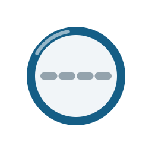
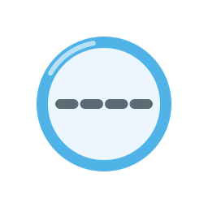

1三版本实拍 —— 深浅背景
vitro-logo-light.svg —— 浅色背景：玻璃蓝 #155E86 + 基准灰 #94A3AD + 墨 #0D1B24
vitro-logo-dark.svg —— 深色背景：冰蓝 #4FB3E8 + 基准灰 #5A6B75 + 冷白墨 #E9F1F7
vitro-logo.svg（default）内嵌纯 CSS @media (prefers-color-scheme: dark) 自动适配，
无脚本；下方为当前系统偏好的形态。
vitro-logo.svg —— default：跟随系统深浅自动切换（当前系统态实拍）
3方形图标 —— favicon / 应用图标 / 徽章

128 · default（@media 自适应）

128 · dark（深底）
图标为主 logo 圆环的等比提取（viewBox 256×256，无字标，色彩/虚线/高光弧与主 logo 完全一致）。
16px 下基准虚线抗锯齿退化为一条实线——「圆 + 一线」识别仍成立（设计注释的预期退化）。
favicon 用法：<link rel="icon" href="assets/logo/vitro-icon.svg" type="image/svg+xml">
4Markdown 嵌入用法
<p align="center">
<img src="assets/logo/vitro-logo.svg" alt="vitro" width="640">
</p>
GitHub 上的 自动深浅适配：直接引用 vitro-logo.svg（default）即可，
浏览器渲染 SVG 内嵌的 @media (prefers-color-scheme) 会跟随读者主题切换；
若想手动控制（如 <picture> 分支写法），分别引用 -light / -dark 两版。